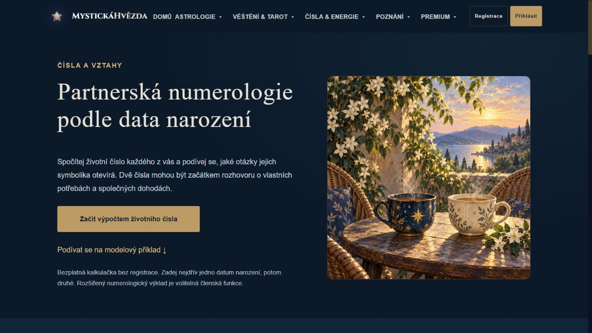
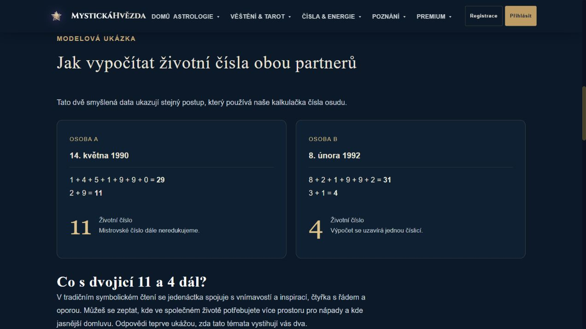
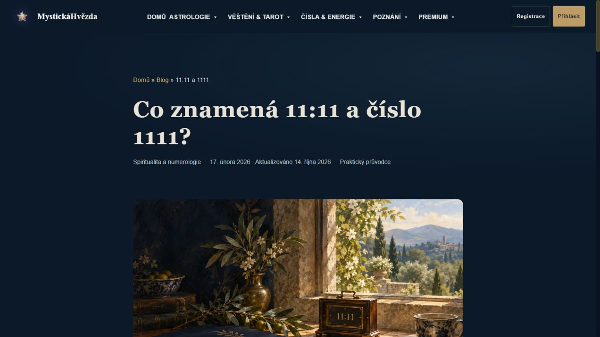

Lokální náhled · 14. října 2026 · zatím nenasazeno
Čísla, která otevírají vlastní otázku
Dvě existující vstupní stránky: jasnější obsah, jednotná malovaná grafika a skutečná cesta k bezplatnému výpočtu.
Partnerská numerologie

Výpočet dvou dat: 11 a 4. Bez registrace, bez procent shody a s praktickou ukázkou domluvy.

11:11 a 1111

Symbolické otázky, vysvětlení pozornosti a původní datum publikace. Nová ilustrace navazuje na naše tarotové obrazy.